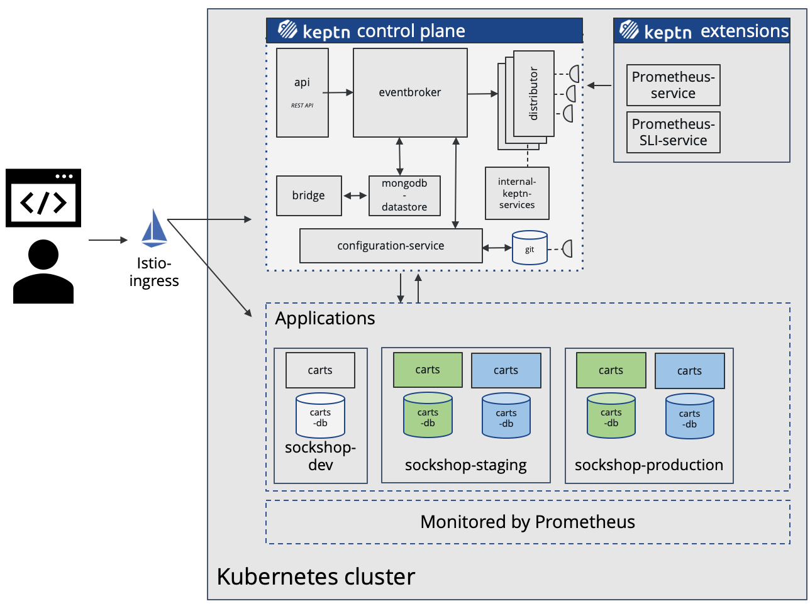
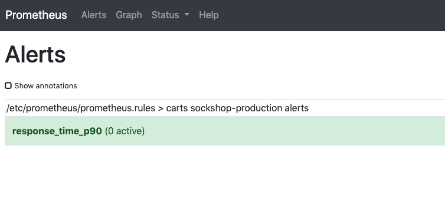
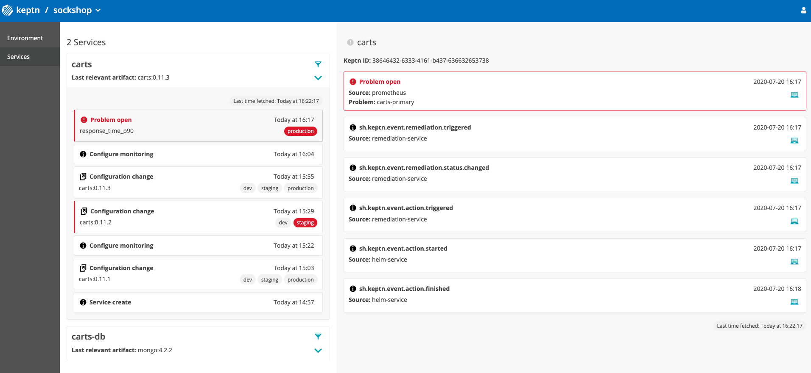

In this tutorial you'll get a full tour through Keptn. Before we get started you'll get to know what you will learn while you walk yourself through this tutorial.
What you'll learn
- How to create a sample project
- How to onboard a first microservice
- How to deploy your first microservice with blue/green deployments
- How to setup quality gates
- How to prevent bad builds of your microservice to reach production
- How to automatically scale your microservice with Keptn
- How to integrate other tools like Slack, MS Team, etc in your Keptn integration
You'll find a time estimate until the end of this tutorial in the right top corner of your screen - this should give you guidance how much time is needed for each step.
In this tutorial, we are going to install Keptn on a Kubernetes cluster, along with Istio for traffic routing and ingress control.
- Keptn as a control-plane for continuous delivery and automated operations
- Istio as the ingress and service mesh within the cluster for traffic routing between blue/green versions of our services
The full setup that we are going to deploy is sketched in the following image.

Keptn can be installed on a variety of Kubernetes distributions. Please find a full compatibility matrix for supported Kubernetes versions here.
Please find tutorials how to set up your cluster here.
Download the Istio command line tool by following the official instructions or by executing the following steps.
curl -L https://istio.io/downloadIstio | sh -
Check the version of Istio that has been downloaded and execute the installer from the corresponding folder, e.g.,
./istio-1.6.5/bin/istioctl install
The installation of Istio should be finished within a couple of minutes.
This will install the default Istio profile into the cluster. Proceed? (y/N) y
✔ Istio core installed
✔ Istiod installed
✔ Ingress gateways installed
✔ Addons installed
✔ Installation complete
Every release of Keptn provides binaries for the Keptn CLI. These binaries are available for Linux, macOS, and Windows.
There are multiple options how to get the Keptn CLI on your machine.
- Easiest option, if you are running on a Linux or Mac OS:
This will download and install the Keptn CLI automatically.curl -sL https://get.keptn.sh | sudo -E bash - Another option is to manually download the current release of the Keptn CLI:
- Download the version for your operating system from Download CLI
- Unpack the download
- Find the
keptnbinary in the unpacked directory
- Linux / macOS: Add executable permissions (
chmod +x keptn), and move it to the desired destination (e.g.mv keptn /usr/local/bin/keptn) - Windows: Copy the executable to the desired folder and add the executable to your PATH environment variable.
Now, you should be able to run the Keptn CLI:
- Linux / macOS
keptn --help - Windows
.\keptn.exe --help
To install the latest release of Keptn with full quality gate + continuous delivery capabilities in your Kubernetes cluster, execute the keptn install command.
keptn install --endpoint-service-type=ClusterIP --use-case=continuous-delivery
Installation details
In the Keptn namespace, the following deployments should be found:
kubectl get deployments -n keptn
NAME READY UP-TO-DATE AVAILABLE AGE
api-gateway-nginx 1/1 1 1 2m44s
api-service 1/1 1 1 2m44s
bridge 1/1 1 1 2m44s
configuration-service 1/1 1 1 2m44s
eventbroker-go 1/1 1 1 2m44s
gatekeeper-service 1/1 1 1 2m44s
helm-service 1/1 1 1 2m44s
helm-service-continuous-deployment-distributor 1/1 1 1 2m44s
jmeter-service 1/1 1 1 2m44s
lighthouse-service 1/1 1 1 2m44s
mongodb 1/1 1 1 2m44s
mongodb-datastore 1/1 1 1 2m44s
remediation-service 1/1 1 1 2m44s
shipyard-service 1/1 1 1 2m44s
Get the EXTERNAL-IP from the istio-ingressgateway as you will need it in the next step
kubectl -n istio-system get svc istio-ingressgateway
NAME TYPE CLUSTER-IP EXTERNAL-IP PORT(S) AGE
istio-ingressgateway LoadBalancer 10.0.171.50 40.125.XXX.XXX 15021:30094/TCP,80:32076/TCP,443:31452/TCP,15443:31721/TCP 2m36s
In my case it is something like 40.125.XXX.XXX.
Create a file ingress-manifest.yaml and copy the following content.
apiVersion: networking.k8s.io/v1beta1
kind: Ingress
metadata:
annotations:
kubernetes.io/ingress.class: istio
name: api-keptn-ingress
namespace: keptn
spec:
rules:
- host: <IP-ADDRESS>.nip.io
http:
paths:
- backend:
serviceName: api-gateway-nginx
servicePort: 80
Next, make sure to replace the <IP-ADDRESS> with the actual IP of the ingress gateway that you just copied. Please note that we are using nip.io (a wildcard DNS resolver) only for the purpose of this tutorial. In a production environment, you might want to use your own domain name here.
Now let's apply the manifest to the cluster.
kubectl apply -f ingress-manifest.yaml
Next, we will also need a Gateway for Keptn. Therefore copy and paste the following content into a file named gateway.yaml and apply it to your Kubernetes cluster.
---
apiVersion: networking.istio.io/v1alpha3
kind: Gateway
metadata:
name: public-gateway
namespace: istio-system
spec:
selector:
istio: ingressgateway
servers:
- port:
name: http
number: 80
protocol: HTTP
hosts:
- '*'
kubectl apply -f gateway-manifest.yaml
Create a ConfigMap for Keptn to pick up with all the needed information. Therefore execute the following statement that will create the configmap.
kubectl create configmap -n keptn ingress-config --from-literal=ingress_hostname_suffix=$(kubectl -n keptn get ingress api-keptn-ingress -ojsonpath={.spec.rules[0].host}) --from-literal=ingress_port=${INGRESS_PORT} --from-literal=ingress_protocol=${INGRESS_PROTOCOL} --from-literal=istio_gateway=${ISTIO_GATEWAY} -oyaml --dry-run | kubectl replace -f -
Finally, restart the Helm service of Keptn to pick up the just created configuration.
kubectl delete pod -n keptn -lapp.kubernetes.io/name=helm-service
In this section we are referring to the Linux/MacOS derivates of the commands. If you are using a Windows host, please follow the official instructions.
KEPTN_ENDPOINT=http://$(kubectl -n keptn get ingress api-keptn-ingress -ojsonpath={.spec.rules[0].host})/api
KEPTN_API_TOKEN=$(kubectl get secret keptn-api-token -n keptn -ojsonpath={.data.keptn-api-token} | base64 --decode)
Use this stored information and authenticate the CLI.
keptn auth --endpoint=$KEPTN_ENDPOINT --api-token=$KEPTN_API_TOKEN
That will give you:
Starting to authenticate
Successfully authenticated
If you want, you can go ahead and take a look at the Keptn API by navigating to the endpoint that is given via
echo $KEPTN_ENDPOINT

A project in Keptn is the logical unit that can hold multiple (micro)services. Therefore, it is the starting point for each Keptn installation.
To get all files you need for this tutorial, please clone the example repo to your local machine.
git clone --branch release-0.7.0 https://github.com/keptn/examples.git --single-branch
cd examples/onboarding-carts
Create a new project for your services using the keptn create project command. In this example, the project is called sockshop. Before executing the following command, make sure you are in the examples/onboarding-carts folder.
Recommended: Create a new project with Git upstream:
To configure a Git upstream for this tutorial, the Git user (--git-user), an access token (--git-token), and the remote URL (--git-remote-url) are required. If a requirement is not met, go to the Keptn documentation where instructions for GitHub, GitLab, and Bitbucket are provided.
keptn create project sockshop --shipyard=./shipyard.yaml --git-user=GIT_USER --git-token=GIT_TOKEN --git-remote-url=GIT_REMOTE_URL
Alternatively: If you don't want to use a Git upstream, you can create a new project without it but please note that this is not the recommended way:
keptn create project sockshop --shipyard=./shipyard.yaml
For creating the project, the tutorial relies on a shipyard.yaml file as shown below:
stages:
- name: "dev"
deployment_strategy: "direct"
test_strategy: "functional"
- name: "staging"
approval_strategy:
pass: "automatic"
warning: "automatic"
deployment_strategy: "blue_green_service"
test_strategy: "performance"
- name: "production"
approval_strategy:
pass: "automatic"
warning: "manual"
deployment_strategy: "blue_green_service"
remediation_strategy: "automated"
This shipyard contains three stages: dev, staging, and production. This results in the three Kubernetes namespaces: sockshop-dev, sockshop-staging, and sockshop-production.
- dev will have a direct (big bang) deployment strategy and functional tests are executed
- staging will have a blue/green deployment strategy with automated approvals for passing quality gates as well as quality gates which result in warnings. As configured, performance tests are executed.
- production will have a blue/green deployment strategy without any further testing. Approvals are done automatically for passed quality gates but manual approval is needed for quality gate evaluations that result in a warning. The configured remediation strategy is used for self-healing in production.
Let's take a look at the project that we have just created. We can find all this information in the Keptn's Bridge.
Therefore, we need the credentials that have been automatically generated for us.
keptn configure bridge --output
Now use these credentials to access it on your Keptn endpoint.
echo http://$(kubectl -n keptn get ingress api-keptn-ingress -ojsonpath={.spec.rules[0].host})/bridge
You will find the just created project in the bridge with all stages.

After creating the project, services can be onboarded to our project.
- Onboard the carts service using the keptn onboard service command:
keptn onboard service carts --project=sockshop --chart=./carts - After onboarding the service, tests (i.e., functional- and performance tests) need to be added as basis for quality gates in the different stages:
- Functional tests for dev stage:
keptn add-resource --project=sockshop --stage=dev --service=carts --resource=jmeter/basiccheck.jmx --resourceUri=jmeter/basiccheck.jmx - Performance tests for staging stage:
keptn add-resource --project=sockshop --stage=staging --service=carts --resource=jmeter/load.jmx --resourceUri=jmeter/load.jmx
basiccheck.jmxas well asload.jmxfor your service. However, you must not rename the files because there is a hardcoded dependency on these file names in the current implementation of Keptn's jmeter-service. - Functional tests for dev stage:
Since the carts service requires a mongodb database, a second service needs to be onboarded.
- Onboard the carts-db service using the keptn onboard service command. The
--deployment-strategyflag specifies that for this service a direct deployment strategy in all stages should be used regardless of the deployment strategy specified in the shipyard. Thus, the database is not blue/green deployed.keptn onboard service carts-db --project=sockshop --chart=./carts-db --deployment-strategy=direct
Take a look in your Keptn's Bridge and see the newly onboarded services.
After onboarding the services, a built artifact of each service can be deployed.
- Deploy the carts-db service by executing the keptn send event new-artifact command:
keptn send event new-artifact --project=sockshop --service=carts-db --image=docker.io/mongo --tag=4.2.2 - Deploy the carts service by specifying the built artifact, which is stored on DockerHub and tagged with version 0.11.1:
keptn send event new-artifact --project=sockshop --service=carts --image=docker.io/keptnexamples/carts --tag=0.11.1 - Go to Keptn's Bridge and check which events have already been generated.

- Optional: Verify the pods that should have been created for services carts and carts-db:
kubectl get pods --all-namespaces | grep carts-sockshop-dev carts-77dfdc664b-25b74 1/1 Running 0 10m sockshop-dev carts-db-54d9b6775-lmhf6 1/1 Running 0 13m sockshop-production carts-db-54d9b6775-4hlwn 2/2 Running 0 12m sockshop-production carts-primary-79bcc7c99f-bwdhg 2/2 Running 0 2m15s sockshop-staging carts-db-54d9b6775-rm8rw 2/2 Running 0 12m sockshop-staging carts-primary-79bcc7c99f-mbbgq 2/2 Running 0 7m24s
- Get the URL for your carts service with the following commands in the respective namespaces:
echo http://carts.sockshop-dev.$(kubectl -n keptn get ingress api-keptn-ingress -ojsonpath={.spec.rules[0].host})echo http://carts.sockshop-staging.$(kubectl -n keptn get ingress api-keptn-ingress -ojsonpath={.spec.rules[0].host})echo http://carts.sockshop-production.$(kubectl -n keptn get ingress api-keptn-ingress -ojsonpath={.spec.rules[0].host}) - Navigate to the URLs to inspect the carts service. In the production namespace, you should receive an output similar to this:

Now that the service is running in all three stages, let us generate some traffic so we have some data we can base the evaluation on.
Change the directory to examples/load-generation/cartsloadgen. If you are still in the onboarding-carts directory, use the following command or change it accordingly:
cd ../load-generation/cartsloadgen
Now let us deploy a pod that will generate some traffic for all three stages of our demo environment.
kubectl apply -f deploy/cartsloadgen-base.yaml
The output will look similar to this.
namespace/loadgen created
deployment.extensions/cartsloadgen created
Optionally, you can verify that the load generator has been started.
kubectl get pods -n loadgen
NAME READY STATUS RESTARTS AGE
cartsloadgen-5dc47c85cf-kqggb 1/1 Running 0 117s
After creating a project and service, you can setup Prometheus monitoring and configure scrape jobs using the Keptn CLI.
- To install the prometheus-service, execute:
kubectl apply -f https://raw.githubusercontent.com/keptn-contrib/prometheus-service/release-0.3.5/deploy/service.yaml - Execute the following command to set up the rules for the Prometheus Alerting Manager:
keptn configure monitoring prometheus --project=sockshop --service=carts
Optional: Verify Prometheus setup in your cluster
- To verify that the Prometheus scrape jobs are correctly set up, you can access Prometheus by enabling port-forwarding for the prometheus-service:
kubectl port-forward svc/prometheus-service 8080 -n monitoring
Prometheus is then available on localhost:8080/targets where you can see the targets for the service:
During the evaluation of a quality gate, the Prometheus SLI provider is required that is implemented by an internal Keptn service, the prometheus-sli-service. This service will fetch the values for the SLIs that are referenced in an SLO configuration file.
To install the prometheus-sli-service, execute:
kubectl apply -f https://raw.githubusercontent.com/keptn-contrib/prometheus-sli-service/0.2.2/deploy/service.yaml
We are going to add the configuration for our SLIs in terms of an SLI file that maps the name of an indicator to a PromQL statement how to actually query it. Please make sure you are in the correct folder examples/onboarding-carts.
keptn add-resource --project=sockshop --stage=production --service=carts --resource=sli-config-prometheus-selfhealing.yaml --resourceUri=prometheus/sli.yaml
For your information, the contents of the file are as follows:
---
spec_version: '1.0'
indicators:
response_time_p50: histogram_quantile(0.5, sum by(le) (rate(http_response_time_milliseconds_bucket{handler="ItemsController.addToCart",job="$SERVICE-$PROJECT-$STAGE"}[3m])))
response_time_p90: histogram_quantile(0.9, sum by(le) (rate(http_response_time_milliseconds_bucket{handler="ItemsController.addToCart",job="$SERVICE-$PROJECT-$STAGE"}[3m])))
response_time_p95: histogram_quantile(0.95, sum by(le) (rate(http_response_time_milliseconds_bucket{handler="ItemsController.addToCart",job="$SERVICE-$PROJECT-$STAGE"}[3m])))
Keptn requires a performance specification for the quality gate. This specification is described in a file called slo.yaml, which specifies a Service Level Objective (SLO) that should be met by a service. To learn more about the slo.yaml file, go to Specifications for Site Reliability Engineering with Keptn.
Activate the quality gates for the carts service. Therefore, navigate to the examples/onboarding-carts folder and upload the slo-quality-gates.yaml file using the add-resource command:
Make sure you are in the correct folder examples/onboarding-carts. If not, change the directory accordingly, e.g., cd ../../onboarding-carts.
keptn add-resource --project=sockshop --stage=staging --service=carts --resource=slo-quality-gates.yaml --resourceUri=slo.yaml
This will add the SLO.yaml file to your Keptn - which is the declaritive definition of a quality gate. Let's take a look at the file contents:
---
spec_version: "1.0"
comparison:
aggregate_function: "avg"
compare_with: "single_result"
include_result_with_score: "pass"
number_of_comparison_results: 1
filter:
objectives:
- sli: "response_time_p95"
key_sli: false
pass: # pass if (relative change <= 10% AND absolute value is < 600ms)
- criteria:
- "<=+10%" # relative values require a prefixed sign (plus or minus)
- "<600" # absolute values only require a logical operator
warning: # if the response time is below 800ms, the result should be a warning
- criteria:
- "<=800"
weight: 1
total_score:
pass: "90%"
warning: "75%"
You can take a look at the currently deployed version of our "carts" microservice before we deploy the next build of our microservice.
- Get the URL for your carts service with the following commands in the respective stages:
echo http://carts.sockshop-dev.$(kubectl -n keptn get ingress api-keptn-ingress -ojsonpath={.spec.rules[0].host})echo http://carts.sockshop-staging.$(kubectl -n keptn get ingress api-keptn-ingress -ojsonpath={.spec.rules[0].host})echo http://carts.sockshop-production.$(kubectl -n keptn get ingress api-keptn-ingress -ojsonpath={.spec.rules[0].host}) - Navigate to
http://carts.sockshop-production.YOUR.DOMAINfor viewing the carts service in your production environment and you should receive an output similar to the following:
- Use the Keptn CLI to deploy a version of the carts service, which contains an artificial slowdown of 1 second in each request.
keptn send event new-artifact --project=sockshop --service=carts --image=docker.io/keptnexamples/carts --tag=0.11.2 - Go ahead and verify that the slow build has reached your
devandstagingenvironments by opening a browser for both environments. Get the URLs with these commands:echo http://carts.sockshop-dev.$(kubectl -n keptn get ingress api-keptn-ingress -ojsonpath={.spec.rules[0].host})echo http://carts.sockshop-staging.$(kubectl -n keptn get ingress api-keptn-ingress -ojsonpath={.spec.rules[0].host})


After triggering the deployment of the carts service in version v0.11.2, the following status is expected:
- Dev stage: The new version is deployed in the dev stage and the functional tests passed.
- To verify, open a browser and navigate to:
echo http://carts.sockshop-dev.$(kubectl -n keptn get ingress api-keptn-ingress -ojsonpath={.spec.rules[0].host})
- To verify, open a browser and navigate to:
- Staging stage: In this stage, version v0.11.2 will be deployed and the performance test starts to run for about 10 minutes. After the test is completed, Keptn triggers the test evaluation and identifies the slowdown. Consequently, a roll-back to version v0.11.1 in this stage is conducted and the promotion to production is not triggered.
- Production stage: The slow version is not promoted to the production stage because of the active quality gate in place. Thus, still version v0.11.1 is expected to be in production.
- To verify, navigate to:
echo http://carts.sockshop-production.$(kubectl -n keptn get ingress api-keptn-ingress -ojsonpath={.spec.rules[0].host})
- To verify, navigate to:
Take a look in the Keptn's bridge and navigate to the last deployment. You will find a quality gate evaluation that got a fail result when evaluation the SLOs of our carts microservice. Thanks to this quality gate the slow build won't be promoted to production but instead automatically rolled back.
To verify, the Keptn's Bridge shows the deployment of v0.11.2 and then the failed test in staging including the roll-back.

- Use the Keptn CLI to send a new version of the carts artifact, which does not contain any slowdown:
keptn send event new-artifact --project=sockshop --service=carts --image=docker.io/keptnexamples/carts --tag=0.11.3 - To verify the deployment in production (it may take a couple of minutes), open a browser and navigate to the carts service in your production environment. As a result, you see
Version: v3. - Besides, you can verify the deployments in your Kubernetes cluster using the following commands:
kubectl get deployments -n sockshop-productionNAME DESIRED CURRENT UP-TO-DATE AVAILABLE AGE carts-db 1 1 1 1 63m carts-primary 1 1 1 1 98mkubectl describe deployment carts-primary -n sockshop-production... Pod Template: Labels: app=carts-primary Containers: carts: Image: docker.io/keptnexamples/carts:0.11.3 - Take another look into the Keptn's Bridge and you will see this new version passed the quality gate and thus, is now running in production!
Next, you will learn how to use the capabilities of Keptn to provide self-healing for an application without modifying code. In the next part, we configure Keptn to scale up the pods of an application if the application undergoes heavy CPU saturation.
Add the prepared SLO file for self-healing to the production stage using the Keptn CLIs add-resource command:
keptn add-resource --project=sockshop --stage=production --service=carts --resource=slo-self-healing.yaml --resourceUri=slo.yaml
Note: The SLO file contains an objective for response_time_p90.
Configure Prometheus with the Keptn CLI (this configures the Alert Manager based on the slo.yaml file):
keptn configure monitoring prometheus --project=sockshop --service=carts
Configure remediation actions for up-scaling based on Prometheus alerts:
keptn add-resource --project=sockshop --stage=production --service=carts --resource=remediation.yaml --resourceUri=remediation.yaml
This is the content of the file that has being added:
apiVersion: spec.keptn.sh/0.1.4
kind: Remediation
metadata:
name: carts-remediation
spec:
remediations:
- problemType: Response time degradation
actionsOnOpen:
- action: scaling
name: scaling
description: Scale up
value: 1
- problemType: response_time_p90
actionsOnOpen:
- action: scaling
name: scaling
description: Scale up
value: 1
To simulate user traffic that is causing an unhealthy behavior in the carts service, please execute the following script. This will add special items into the shopping cart that cause some extensive calculation.
- Move to the correct folder for the load generation scripts:
cd ../load-generation/cartsloadgen/deploy - Start the load generation script:
kubectl apply -f cartsloadgen-faulty.yaml - (optional:) Verify the load in Prometheus.
- Make a port forward to access Prometheus:
kubectl port-forward svc/prometheus-service -n monitoring 8080:8080 - Access Prometheus from your browser on http://localhost:8080.
- In the Graph tab, add the expression
histogram_quantile(0.9, sum by(le) (rate(http_response_time_milliseconds_bucket{job="carts-sockshop-production"}[3m]))) - Select the Graph tab to see your Response time metrics of the
cartsservice in thesockshop-productionenvironment. - You should see a graph which locks similar to this:

- Make a port forward to access Prometheus:
After approximately 10-15 minutes, the Alert Manager will send out an alert since the service level objective is not met anymore.
To verify that an alert was fired, select the Alerts view where you should see that the alert response_time_p90 is in the firing state:

After receiving the problem notification, the prometheus-service will translate it into a Keptn CloudEvent. This event will eventually be received by the remediation-service that will look for a remediation action specified for this type of problem and, if found, execute it.
In this tutorial, the number of pods will be increased to remediate the issue of the response time increase.
- Check the executed remediation actions by executing:
You can see that thekubectl get deployments -n sockshop-productioncarts-primarydeployment is now served by two pods:NAME DESIRED CURRENT UP-TO-DATE AVAILABLE AGE carts-db 1 1 1 1 37m carts-primary 2 2 2 2 32m - Also you should see an additional pod running when you execute:
kubectl get pods -n sockshop-productionNAME READY STATUS RESTARTS AGE carts-db-57cd95557b-r6cg8 1/1 Running 0 38m carts-primary-7c96d87df9-75pg7 2/2 Running 0 33m carts-primary-7c96d87df9-78fh2 2/2 Running 0 5m - To get an overview of the actions that got triggered by the response time SLO violation, you can use the Keptn's Bridge.In this example, the bridge shows that the remediation service triggered an update of the configuration of the carts service by increasing the number of replicas to 2. When the additional replica was available, the wait-service waited for ten minutes for the remediation action to take effect. Afterwards, an evaluation by the lighthouse-service was triggered to check if the remediation action resolved the problem. In this case, increasing the number of replicas achieved the desired effect, since the evaluation of the service level objectives has been successful.


- Furthermore, you can use Prometheus to double-check the response time:

- Also, the Prometheus Alert Manager will show zero active alerts.
Thanks for taking a full tour through Keptn!
Although Keptn has even more to offer that should have given you a good overview what you can do with Keptn.
What we've covered
- We have created a sample project with the Keptn CLI and set up a multi-stage delivery pipeline with the
shipyardfilestages: - name: "dev" deployment_strategy: "direct" test_strategy: "functional" - name: "staging" approval_strategy: pass: "automatic" warning: "automatic" deployment_strategy: "blue_green_service" test_strategy: "performance" - name: "production" approval_strategy: pass: "automatic" warning: "manual" deployment_strategy: "blue_green_service" remediation_strategy: "automated" - We have set up quality gates based on service level objectives in our
slofile--- spec_version: "1.0" comparison: aggregate_function: "avg" compare_with: "single_result" include_result_with_score: "pass" number_of_comparison_results: 1 filter: objectives: - sli: "response_time_p95" key_sli: false pass: # pass if (relative change <= 10% AND absolute value is < 600ms) - criteria: - "<=+10%" # relative values require a prefixed sign (plus or minus) - "<600" # absolute values only require a logical operator warning: # if the response time is below 800ms, the result should be a warning - criteria: - "<=800" weight: 1 total_score: pass: "90%" warning: "75%" - We have tested our quality gates by deploying a bad build to our cluster and verified that Keptn quality gates stopped them.
- We have set up self-healing to automatically scale our application

Keptn can be easily extended with external tools such as notification tools, other SLI providers, bots to interact with Keptn, etc.
While we do not cover additional integrations in this tutorial, please feel fee to take a look at our integration repositories:
- Keptn Contrib lists mature Keptn integrations that you can use for your Keptn installation
- Keptn Sandbox collects mostly new integrations and those that are currently under development - however, you can also find useful integrations here.
Please visit us in our Keptn Slack and tell us how you like Keptn and this tutorial! We are happy to hear your thoughts & suggestions!
Also, make sure to follow us on Twitter to get the latest news on Keptn, our tutorials and newest releases!